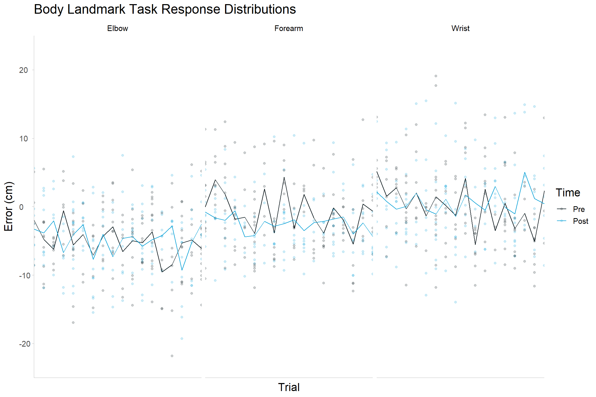
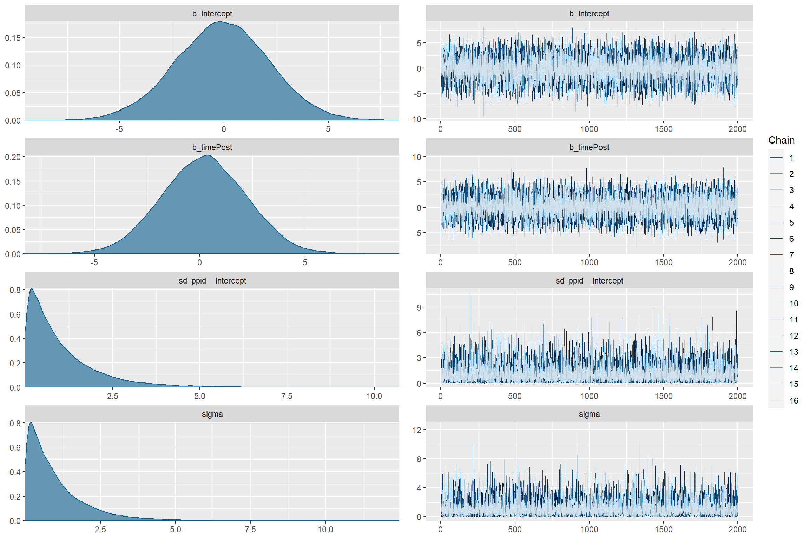
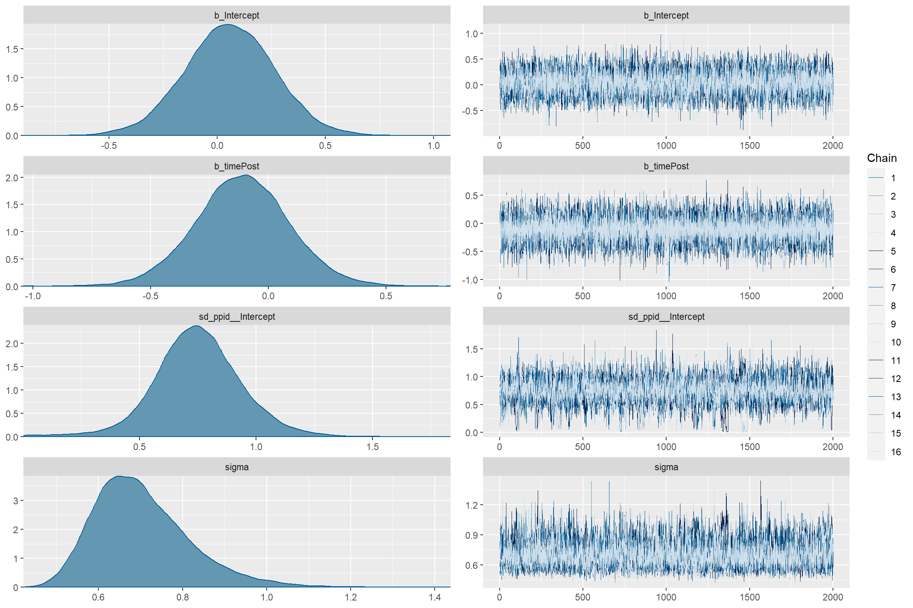
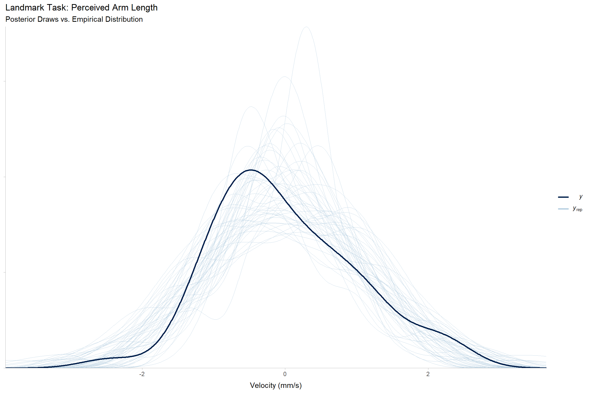

armlength_df <- fread(
here::here("data", "study_two", "landmark_armlength.csv")
)
armlength_df <- armlength_df[,
`:=`(
perceived_std = datawizard::standardise(perceived),
ratio_std = datawizard::standardise(ratio),
time = factor(time, levels = c("Pre", "Post"))
)
]
armlength_df_lapsefix <- fread(
here::here("data", "study_two", "landmark_armlength_lapsefix.csv")
)
armlength_df_lapsefix[,
`:=`(
perceived_std = datawizard::standardise(perceived),
ratio_std = datawizard::standardise(ratio),
time = factor(time, levels = c("Pre", "Post"))
)
]Avatar VR - Supplementary Analyses - Landmark Task
Landmark Task
By-trial Errors
To address the possibility that the short effect of tool-use is present in landmark localization as well as kinematics, we reran the original landmark models using the same arrangement of trials as above.
Plots
landmark <- read_csv(here::here("data", "study_one", "landmark.csv")) %>%
dplyr::select(ppid, trial, time, forearmlength, lapse_fix_target, lapse_fix_error) %>%
mutate(error_std = standardize(lapse_fix_error),
target = factor(lapse_fix_target,
levels = c("Elbow", "Forearm", "Wrist")),
error_cm = lapse_fix_error * 100,
time = factor(time,
levels = c("pre", "post"),
labels= c("Pre", "Post"))) %>%
as.data.table()
(lm_empirical <- landmark %>%
ggplot(aes(y = error_cm,
x = trial,
fill = time,
color = time)) +
geom_point(alpha = .2) +
geom_line(
data = landmark %>%
group_by(time, trial, target) %>%
summarise(
error_cm = mean(error_cm, na.rm = TRUE)),
aes(y = error_cm)) +
facet_grid(~target)+
theme_tidybayes() +
scale_x_discrete(expand = c(0, 0))+
scale_y_continuous(limits = c(-25, 25), expand = c(0, 0)) +
scale_fill_manual(breaks = c("Pre", "Post"),
values = c("#001015", "#09A1D7"),
labels = c("Pre", "Post")) +
scale_color_manual(breaks = c("Pre", "Post"),
values = c("#001015", "#09A1D7"),
labels = c("Pre", "Post")) +
labs(y = "Error (cm)", x = "Trial", fill = "Time", color = "Time", title = "Body Landmark Task Response Distributions") +
theme(axis.text.y = element_text(hjust = 0),
title = element_text(size = 16),
text = element_text(size = 14, color = "black"),
strip.background = element_blank(),
strip.placement = "inside",
strip.switch.pad.wrap = unit(0, "in"),
panel.background = element_rect(fill = "transparent", colour = NA),
legend.background = element_rect(fill = "transparent", colour = NA),
plot.background = element_rect(fill = "transparent", colour = NA)))
Perceived Arm Length Models
Prior
lm_perceived_priors <- brm(
perceived_std ~ 1 + time + (1 | ppid),
data = armlength_df,
family = gaussian,
prior = c(
set_prior(prior = "normal(.2, 2)", class = "b", coef = "timePost"),
set_prior(prior = "normal(0, 2)", class = "Intercept"),
set_prior(prior = "exponential(1)", class = "sd"),
set_prior(prior = "exponential(1)", class = "sigma")
#set_prior(prior = "lkj(1)", class = "cor", group = "ppid")
),
sample_prior = "only",
seed = 1337,
silent = TRUE, refresh = 0,
save_pars = save_pars(all = TRUE),
warmup = b, iter = i, chains = ch, cores = co,
control = control_list
)Running MCMC with 16 parallel chains...
Chain 1 finished in 0.5 seconds.
Chain 2 finished in 0.7 seconds.
Chain 3 finished in 0.6 seconds.
Chain 4 finished in 0.6 seconds.
Chain 5 finished in 0.5 seconds.
Chain 6 finished in 0.6 seconds.
Chain 7 finished in 0.6 seconds.
Chain 8 finished in 0.5 seconds.
Chain 9 finished in 0.6 seconds.
Chain 10 finished in 0.6 seconds.
Chain 11 finished in 0.6 seconds.
Chain 12 finished in 0.6 seconds.
Chain 13 finished in 0.6 seconds.
Chain 14 finished in 0.6 seconds.
Chain 15 finished in 0.6 seconds.
Chain 16 finished in 0.5 seconds.
All 16 chains finished successfully.
Mean chain execution time: 0.6 seconds.
Total execution time: 1.2 seconds.plot(lm_perceived_priors)
summary(lm_perceived_priors) Family: gaussian
Links: mu = identity; sigma = identity
Formula: perceived_std ~ 1 + time + (1 | ppid)
Data: armlength_df (Number of observations: 50)
Draws: 16 chains, each with iter = 3000; warmup = 1000; thin = 1;
total post-warmup draws = 32000
Group-Level Effects:
~ppid (Number of levels: 25)
Estimate Est.Error l-95% CI u-95% CI Rhat Bulk_ESS Tail_ESS
sd(Intercept) 1.00 0.99 0.03 3.69 1.00 36226 17337
Population-Level Effects:
Estimate Est.Error l-95% CI u-95% CI Rhat Bulk_ESS Tail_ESS
Intercept -0.08 2.24 -4.54 4.32 1.00 64390 22736
timePost 0.19 2.00 -3.71 4.06 1.00 60878 22428
Family Specific Parameters:
Estimate Est.Error l-95% CI u-95% CI Rhat Bulk_ESS Tail_ESS
sigma 0.99 0.99 0.02 3.66 1.00 36698 16482
Draws were sampled using sample(hmc). For each parameter, Bulk_ESS
and Tail_ESS are effective sample size measures, and Rhat is the potential
scale reduction factor on split chains (at convergence, Rhat = 1).Posterior
lm_perceived <- update(
lm_perceived_priors,
sample_prior = "no",
refresh = 0,
seed = 1337,
file = here::here("scripts", "for_osf", "tooluse_in_VR", "models", "supplementary", "landmark_perceived.rds")
)Running MCMC with 16 parallel chains...
Chain 1 finished in 1.1 seconds.
Chain 2 finished in 1.2 seconds.
Chain 3 finished in 1.3 seconds.
Chain 4 finished in 1.0 seconds.
Chain 5 finished in 1.1 seconds.
Chain 6 finished in 1.1 seconds.
Chain 7 finished in 1.0 seconds.
Chain 8 finished in 1.1 seconds.
Chain 9 finished in 1.0 seconds.
Chain 10 finished in 1.1 seconds.
Chain 13 finished in 1.0 seconds.
Chain 14 finished in 1.0 seconds.
Chain 16 finished in 1.0 seconds.
Chain 11 finished in 1.3 seconds.
Chain 12 finished in 1.3 seconds.
Chain 15 finished in 1.3 seconds.
All 16 chains finished successfully.
Mean chain execution time: 1.1 seconds.
Total execution time: 1.5 seconds.plot(lm_perceived)
summary(lm_perceived) Family: gaussian
Links: mu = identity; sigma = identity
Formula: perceived_std ~ 1 + time + (1 | ppid)
Data: armlength_df (Number of observations: 50)
Draws: 16 chains, each with iter = 3000; warmup = 1000; thin = 1;
total post-warmup draws = 32000
Group-Level Effects:
~ppid (Number of levels: 25)
Estimate Est.Error l-95% CI u-95% CI Rhat Bulk_ESS Tail_ESS
sd(Intercept) 0.75 0.19 0.37 1.13 1.00 6068 5258
Population-Level Effects:
Estimate Est.Error l-95% CI u-95% CI Rhat Bulk_ESS Tail_ESS
Intercept 0.06 0.21 -0.36 0.46 1.00 14568 19908
timePost -0.11 0.20 -0.51 0.29 1.00 43828 22033
Family Specific Parameters:
Estimate Est.Error l-95% CI u-95% CI Rhat Bulk_ESS Tail_ESS
sigma 0.70 0.11 0.52 0.97 1.00 7851 7796
Draws were sampled using sample(hmc). For each parameter, Bulk_ESS
and Tail_ESS are effective sample size measures, and Rhat is the potential
scale reduction factor on split chains (at convergence, Rhat = 1).pp_check(lm_perceived, ndraws = 50) +
theme_tidybayes() +
theme(
axis.text.y = element_blank()
) +
labs(
title = "Landmark Task: Perceived Arm Length",
subtitle = "Posterior Draws vs. Empirical Distribution",
x = "Velocity (mm/s)"
)
lm_bf <- bayesfactor_pointnull(
lm_perceived,
prior = lm_perceived_priors
) %>% as.data.table()
lm_describe <- bayestestR::describe_posterior(
lm_perceived,
centrality = "map",
ci_method="hdi"
) %>%
dplyr::filter(Parameter == "b_timePost") %>%
mutate("Outcome" = "Perceived Arm Length")
(
lm_describe <- bind_cols(
lm_describe,
"BF" = exp(
lm_bf[Parameter == "b_timePost",
log_BF]
)
)
)Summary of Posterior Distribution
Parameter | MAP | 95% CI | pd | ROPE | % in ROPE | Rhat | ESS | Outcome | BF
-------------------------------------------------------------------------------------------------------------------------
b_timePost | -0.10 | [-0.51, 0.28] | 71.51% | [-0.10, 0.10] | 35.49% | 1.000 | 43076.00 | Perceived Arm Length | 0.112sessioninfo::package_info() ! package * version date (UTC) lib source
abind 1.4-5 2016-07-21 [1] CRAN (R 4.2.0)
arrayhelpers 1.1-0 2020-02-04 [1] CRAN (R 4.2.0)
askpass 1.1 2019-01-13 [1] CRAN (R 4.2.0)
backports 1.4.1 2021-12-13 [1] CRAN (R 4.2.0)
base64enc 0.1-3 2015-07-28 [1] CRAN (R 4.2.0)
bayesplot 1.10.0 2022-11-16 [1] CRAN (R 4.2.2)
bayestestR * 0.13.0 2022-09-18 [1] CRAN (R 4.2.1)
bit 4.0.5 2022-11-15 [1] CRAN (R 4.2.2)
bit64 4.0.5 2020-08-30 [1] CRAN (R 4.2.0)
boot 1.3-28.1 2022-11-22 [1] CRAN (R 4.2.2)
bridgesampling 1.1-2 2021-04-16 [1] CRAN (R 4.2.0)
brms * 2.18.0 2022-09-19 [1] CRAN (R 4.2.1)
Brobdingnag 1.2-9 2022-10-19 [1] CRAN (R 4.2.1)
cachem 1.0.7 2023-02-24 [1] CRAN (R 4.2.2)
callr 3.7.3 2022-11-02 [1] CRAN (R 4.2.2)
checkmate 2.1.0 2022-04-21 [1] CRAN (R 4.2.0)
cli 3.6.0 2023-01-09 [1] CRAN (R 4.2.2)
cmdstanr * 0.5.2 2022-04-26 [1] local
coda 0.19-4 2020-09-30 [1] CRAN (R 4.2.0)
codetools 0.2-19 2023-02-01 [1] CRAN (R 4.2.2)
colorspace 2.1-0 2023-01-23 [1] CRAN (R 4.2.2)
colourpicker 1.2.0 2022-10-28 [1] CRAN (R 4.2.2)
crayon 1.5.2 2022-09-29 [1] CRAN (R 4.2.1)
crosstalk 1.2.0 2021-11-04 [1] CRAN (R 4.2.0)
crul 1.3 2022-09-03 [1] CRAN (R 4.2.2)
curl 5.0.0 2023-01-12 [1] CRAN (R 4.2.2)
data.table * 1.14.8 2023-02-17 [1] CRAN (R 4.2.2)
datawizard * 0.6.5 2022-12-14 [1] CRAN (R 4.2.2)
digest 0.6.31 2022-12-11 [1] CRAN (R 4.2.2)
distributional 0.3.1 2022-09-02 [1] CRAN (R 4.2.1)
dplyr * 1.1.0 2023-01-29 [1] CRAN (R 4.2.2)
DT 0.27 2023-01-17 [1] CRAN (R 4.2.2)
dygraphs 1.1.1.6 2018-07-11 [1] CRAN (R 4.2.0)
ellipsis 0.3.2 2021-04-29 [1] CRAN (R 4.2.0)
emmeans 1.8.4-1 2023-01-17 [1] CRAN (R 4.2.2)
estimability 1.4.1 2022-08-05 [1] CRAN (R 4.2.1)
evaluate 0.20 2023-01-17 [1] CRAN (R 4.2.2)
fansi 1.0.4 2023-01-22 [1] CRAN (R 4.2.2)
farver 2.1.1 2022-07-06 [1] CRAN (R 4.2.1)
fastmap 1.1.1 2023-02-24 [1] CRAN (R 4.2.2)
flextable * 0.8.6 2023-02-23 [1] CRAN (R 4.2.2)
fontBitstreamVera 0.1.1 2017-02-01 [1] CRAN (R 4.2.0)
fontLiberation 0.1.0 2016-10-15 [1] CRAN (R 4.2.0)
fontquiver 0.2.1 2017-02-01 [1] CRAN (R 4.2.2)
gamm4 0.2-6 2020-04-03 [1] CRAN (R 4.2.0)
gdtools 0.3.1 2023-02-17 [1] CRAN (R 4.2.2)
generics 0.1.3 2022-07-05 [1] CRAN (R 4.2.1)
gfonts 0.2.0 2023-01-08 [1] CRAN (R 4.2.2)
ggdist 3.2.1 2023-01-18 [1] CRAN (R 4.2.2)
ggplot2 * 3.4.1 2023-02-10 [1] CRAN (R 4.2.2)
glue 1.6.2 2022-02-24 [1] CRAN (R 4.2.0)
gridExtra 2.3 2017-09-09 [1] CRAN (R 4.2.0)
gtable 0.3.1 2022-09-01 [1] CRAN (R 4.2.1)
gtools 3.9.4 2022-11-27 [1] CRAN (R 4.2.2)
here * 1.0.1 2020-12-13 [1] CRAN (R 4.2.0)
hms 1.1.2 2022-08-19 [1] CRAN (R 4.2.1)
htmltools 0.5.4 2022-12-07 [1] CRAN (R 4.2.2)
htmlwidgets 1.6.1 2023-01-07 [1] CRAN (R 4.2.2)
httpcode 0.3.0 2020-04-10 [1] CRAN (R 4.2.2)
httpuv 1.6.9 2023-02-14 [1] CRAN (R 4.2.2)
igraph 1.4.1 2023-02-24 [1] CRAN (R 4.2.2)
inline 0.3.19 2021-05-31 [1] CRAN (R 4.2.0)
insight 0.19.0 2023-01-30 [1] CRAN (R 4.2.2)
jsonlite 1.8.4 2022-12-06 [1] CRAN (R 4.2.2)
knitr 1.42 2023-01-25 [1] CRAN (R 4.2.2)
labeling 0.4.2 2020-10-20 [1] CRAN (R 4.2.0)
later 1.3.0 2021-08-18 [1] CRAN (R 4.2.0)
lattice 0.20-45 2021-09-22 [2] CRAN (R 4.2.1)
lifecycle 1.0.3 2022-10-07 [1] CRAN (R 4.2.1)
lme4 1.1-31 2022-11-01 [1] CRAN (R 4.2.2)
logspline 2.1.19 2022-11-22 [1] CRAN (R 4.2.2)
loo 2.5.1 2022-03-24 [1] CRAN (R 4.2.0)
magrittr * 2.0.3 2022-03-30 [1] CRAN (R 4.2.0)
markdown 1.5 2023-01-31 [1] CRAN (R 4.2.2)
MASS 7.3-58.2 2023-01-23 [1] CRAN (R 4.2.2)
Matrix 1.5-3 2022-11-11 [1] CRAN (R 4.2.2)
matrixStats 0.63.0 2022-11-18 [1] CRAN (R 4.2.2)
memoise 2.0.1 2021-11-26 [1] CRAN (R 4.2.1)
mgcv 1.8-41 2022-10-21 [1] CRAN (R 4.2.2)
mime 0.12 2021-09-28 [1] CRAN (R 4.2.0)
miniUI 0.1.1.1 2018-05-18 [1] CRAN (R 4.2.0)
minqa 1.2.5 2022-10-19 [1] CRAN (R 4.2.1)
multcomp 1.4-22 2023-02-10 [1] CRAN (R 4.2.2)
munsell 0.5.0 2018-06-12 [1] CRAN (R 4.2.0)
mvtnorm 1.1-3 2021-10-08 [1] CRAN (R 4.2.0)
nlme 3.1-162 2023-01-31 [1] CRAN (R 4.2.2)
nloptr 2.0.3 2022-05-26 [1] CRAN (R 4.2.0)
officer 0.6.0 2023-02-17 [1] CRAN (R 4.2.2)
openssl 2.0.5 2022-12-06 [1] CRAN (R 4.2.2)
pillar 1.8.1 2022-08-19 [1] CRAN (R 4.2.1)
pkgbuild 1.4.0 2022-11-27 [1] CRAN (R 4.2.2)
pkgconfig 2.0.3 2019-09-22 [1] CRAN (R 4.2.0)
plyr 1.8.8 2022-11-11 [1] CRAN (R 4.2.2)
posterior 1.4.0 2023-02-22 [1] CRAN (R 4.2.2)
prettyunits 1.1.1 2020-01-24 [1] CRAN (R 4.2.0)
processx 3.8.0 2022-10-26 [1] CRAN (R 4.2.2)
projpred 2.4.0 2023-02-12 [1] CRAN (R 4.2.2)
promises 1.2.0.1 2021-02-11 [1] CRAN (R 4.2.0)
ps 1.7.2 2022-10-26 [1] CRAN (R 4.2.2)
purrr 1.0.1 2023-01-10 [1] CRAN (R 4.2.2)
R6 2.5.1 2021-08-19 [1] CRAN (R 4.2.0)
ragg 1.2.5 2023-01-12 [1] CRAN (R 4.2.2)
Rcpp * 1.0.10 2023-01-22 [1] CRAN (R 4.2.2)
D RcppParallel 5.1.7 2023-02-27 [1] CRAN (R 4.2.2)
readr * 2.1.4 2023-02-10 [1] CRAN (R 4.2.2)
reshape2 1.4.4 2020-04-09 [1] CRAN (R 4.2.0)
rlang 1.0.6 2022-09-24 [1] CRAN (R 4.2.1)
rmarkdown 2.20 2023-01-19 [1] CRAN (R 4.2.2)
rprojroot 2.0.3 2022-04-02 [1] CRAN (R 4.2.0)
rstan 2.26.11 2022-04-23 [1] local
rstantools 2.2.0 2022-04-08 [1] CRAN (R 4.2.0)
sandwich 3.0-2 2022-06-15 [1] CRAN (R 4.2.2)
scales 1.2.1 2022-08-20 [1] CRAN (R 4.2.1)
sessioninfo 1.2.2 2021-12-06 [1] CRAN (R 4.2.1)
shiny 1.7.4 2022-12-15 [1] CRAN (R 4.2.2)
shinyjs 2.1.0 2021-12-23 [1] CRAN (R 4.2.0)
shinystan 2.6.0 2022-03-03 [1] CRAN (R 4.2.0)
shinythemes 1.2.0 2021-01-25 [1] CRAN (R 4.2.0)
StanHeaders 2.26.11 2022-04-23 [1] local
stringi 1.7.12 2023-01-11 [1] CRAN (R 4.2.2)
stringr 1.5.0 2022-12-02 [1] CRAN (R 4.2.2)
survival 3.5-3 2023-02-12 [1] CRAN (R 4.2.2)
svUnit 1.0.6 2021-04-19 [1] CRAN (R 4.2.0)
systemfonts 1.0.4 2022-02-11 [1] CRAN (R 4.2.0)
tensorA 0.36.2 2020-11-19 [1] CRAN (R 4.2.0)
textshaping 0.3.6 2021-10-13 [1] CRAN (R 4.2.2)
TH.data 1.1-1 2022-04-26 [1] CRAN (R 4.2.2)
threejs 0.3.3 2020-01-21 [1] CRAN (R 4.2.0)
tibble 3.1.8 2022-07-22 [1] CRAN (R 4.2.1)
tidybayes * 3.0.3 2023-02-04 [1] CRAN (R 4.2.2)
tidyr 1.3.0 2023-01-24 [1] CRAN (R 4.2.2)
tidyselect 1.2.0 2022-10-10 [1] CRAN (R 4.2.1)
tzdb 0.3.0 2022-03-28 [1] CRAN (R 4.2.0)
utf8 1.2.3 2023-01-31 [1] CRAN (R 4.2.2)
uuid 1.1-0 2022-04-19 [1] CRAN (R 4.2.0)
V8 4.2.2 2022-11-03 [1] CRAN (R 4.2.1)
vctrs 0.5.2 2023-01-23 [1] CRAN (R 4.2.2)
vroom 1.6.1 2023-01-22 [1] CRAN (R 4.2.2)
withr 2.5.0 2022-03-03 [1] CRAN (R 4.2.0)
xfun 0.37 2023-01-31 [1] CRAN (R 4.2.2)
xml2 1.3.3 2021-11-30 [1] CRAN (R 4.2.0)
xtable 1.8-4 2019-04-21 [1] CRAN (R 4.2.0)
xts 0.13.0 2023-02-20 [1] CRAN (R 4.2.2)
yaml 2.3.7 2023-01-23 [1] CRAN (R 4.2.2)
zip 2.2.2 2022-10-26 [1] CRAN (R 4.2.2)
zoo 1.8-11 2022-09-17 [1] CRAN (R 4.2.1)
[1] C:/Users/Joshu/AppData/Local/R/win-library/4.2
[2] C:/Program Files/R/R-4.2.1/library
D ── DLL MD5 mismatch, broken installation.